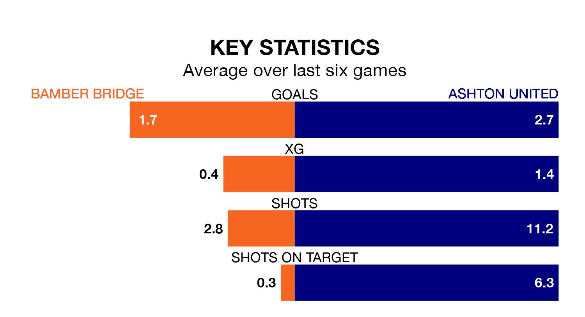

Ashton United are strong favourites to take all three points despite Bamber Bridge's home advantage in Saturday's match at the Sir Tom Finney Stadium.
*Betting Company* are offering odds of 1.45 on Ashton sealing the win, with the visitors sitting seventh in the Northern Premier League table.
Bamber Bridge, who are 17th in the league and 23 points behind Ashton, are priced at 4.41 to win. A draw is set at 3.91.
Bamber Bridge are in disappointing form in the Northern Premier League, with two wins and four losses from their last six games.
With five wins and a draw over that period, Ashton's form is much better – they have taken 16 points from 18, compared to the home team's six.
With 64 goals in 35 games so far this season, United are scoring more than average in the league with 1.8 goals per game. And they are conceding fewer than average, letting in 52 goals at a rate of 1.5 per game.
Bamber Bridge, meanwhile, are average scorers, with 1.6 goals per game. They have conceded 2.0 goals per game.
In the last 10 years, Bamber Bridge and Ashton have played each other on seven occasions. Bamber Bridge won one of them, Ashton three, and they drew three times.
On average, Bamber Bridge scored 0.9 goals and Ashton 1.4 in those matches.
Their last meeting was on November 4, when they played out a 2-2 draw.
Bamber Bridge's last match was on Monday, a 3-2 loss against Lancaster City.
Ashton beat United of Manchester 2-0 last time out, also on Monday.
Updated: 16:41 (UTC), 04/04/24